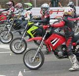
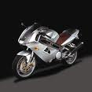

2002 | incepe cupa tineretului | ||
|  | |||
2003 | apare noul model mz 1000s pe piata.In proiectarea modelului s-au folosit ultimele noutati tehnologice. | ||
|  | |||
2004 | MZ 1000s dovedeste fiabilitate cand este folosit in cursa de 24 de ore in OSCHERSLEBEN | ||
2005 | Dr. Christoph Baumgärtner a deschis o noua linie de productie MZ. | ||
2006 | proba | ||
2007 | proba | ||
2008 | La 12 decembrie, închis fabrica MZ din Zschopau. | ||
2009 | Din martie 2009, fostul Racer GP Ralf Waldmann si Martin Wimmer, Martina Haeger si sotia sa sunt proprietarii MZ. Compania a fost redenumita "Zschopau Motor Works Ltd". | ||
 | |||
2010 | proba | ||